Best design system examples in 2026
Key things I’ve learned from studying top design system examples to help you build or improve your own design system.

As a designer, it’s amazing how much you can learn simply by exploring existing design systems. I’ve studied hundreds of design systems over the years, even before they were called design systems, and in this article I’ll be highlighting what I’ve learned from some of the best design system examples I’ve come across so that you can build your own design system.
There are many similarities across design systems, but there are still lots of details that designers can’t seem to agree on. It’s fascinating to see the differences and the rationale behind the designs. Colour systems, component design, and indicating elevation are a few areas of inconsistency across design systems. Luckily, many popular design patterns are similar across design systems, which is great for users, as they won’t need to relearn new patterns.
Let’s go over some design system basics before we start exploring the design system examples.
What is a design system?
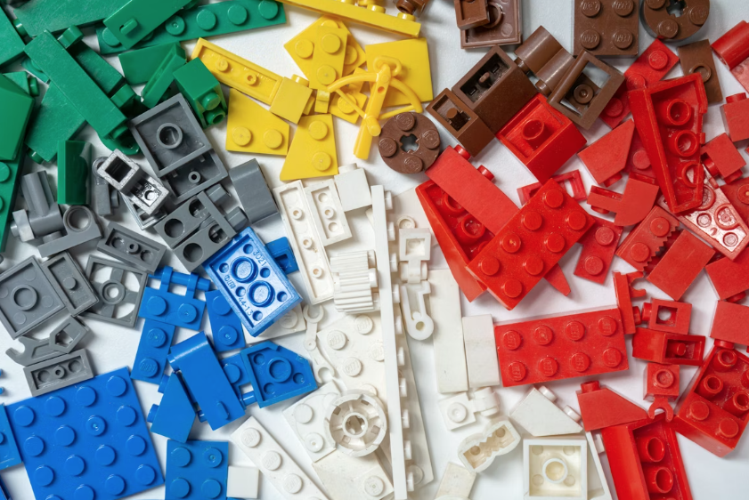
A design system is like a box of LEGO bricks for digital products. Just as LEGO bricks come in different shapes, sizes, and colours that you can snap together to build anything you can imagine, a design system provides a set of pre-made components, like buttons, icons, and form inputs, that you can combine to create consistent and cohesive user interfaces.
Just like with LEGO, where you have instructions to guide you in building a specific model, a design system comes with guidelines that show you how to use the components. This ensures that the website or application you’re building looks and works consistently.
A design system serves as a single source of truth that ensures that all design and development teams are aligned, enabling them to build unified products more efficiently.
Benefits of a design system
Having endless design possibilities sounds great in theory, but in practice, it can be frustrating and time consuming. When designing an interface, there are so many options to choose from regarding layout, spacing, typography, and colour, it can quickly get overwhelming. That’s why having a system of predefined options and guidelines to help you efficiently make design decisions is crucial.
Whether you’re working on a small website or a complex web application, a design system is a must-have for many reasons:
- Consistency: Ensures a uniform look and feel across all products, enhancing the user experience.
- Efficiency: Speeds up the design and development process by providing ready-to-use components and design guidelines.
- Scalability: Makes it easier to scale products by providing a foundation that can grow with the brand or product.
- Collaboration: Enhances collaboration between design and development teams by providing a common language and set of tools.
- Quality control: Helps maintain high-quality standards across all designs, reducing the risk of errors and inconsistencies.
Practical UI Figma design system
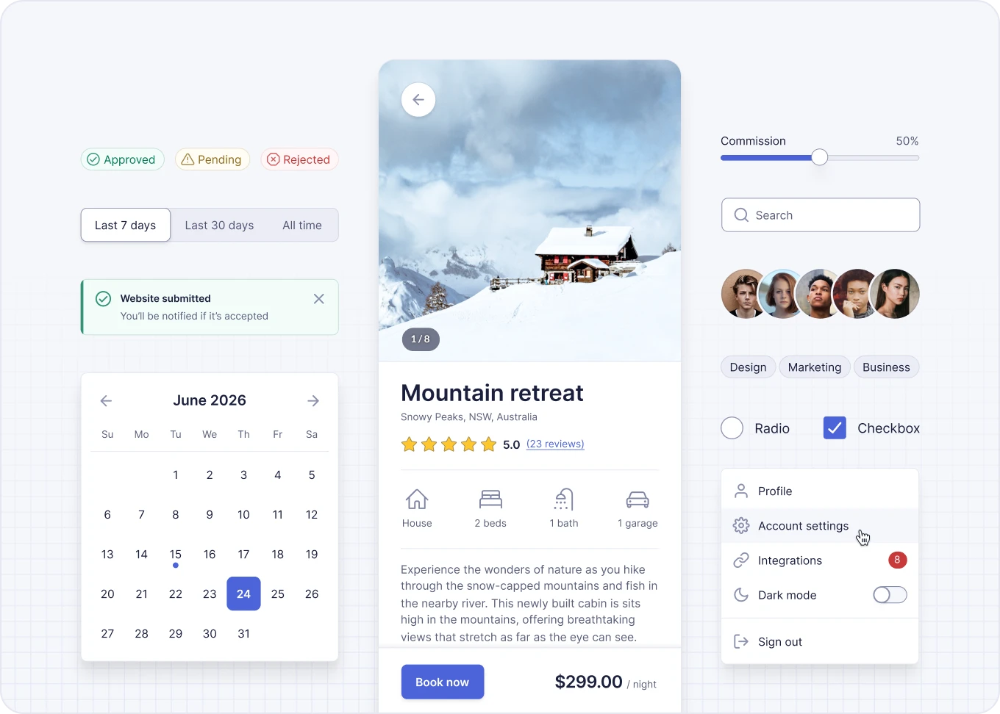
I love design systems so much that I actually created my own. I wanted to share what I’ve learned by creating a lean and powerful Figma design system that’s intuitive, accessible, and beautiful. Creating this design system has truly been a labour of love and I’ve spent thousands of hours crafting every detail. It’s based on logic-driven design guidelines from my UI design book, which has helped thousands improve their interface design skills. Feel free to check it out.
View the Practical UI Figma Design System
3 best design system examples
Let’s have a look at my top 3 design system examples and I’ll highlight some interesting things I’ve learned from each one.
IBM’s Carbon Design System

IBM’s Carbon Design System is a really well put together design system and it’s often one of my go-to design systems for component research. It’s cleverly designed, practical to use, and has a wealth of detailed and sensible guidance. It’s open-source and has a modular framework designed to create consistent, scalable, and accessible digital experiences across IBM’s diverse product suite.
What I learned
Rather than using shadows to indicate depth or elevation, the Carbon design system uses colour. As expected in dark mode, colours get progressively lighter as the elevation level increases. Light mode is a bit different to most design systems though. Colours simply alternate between white and grey with each level of elevation.
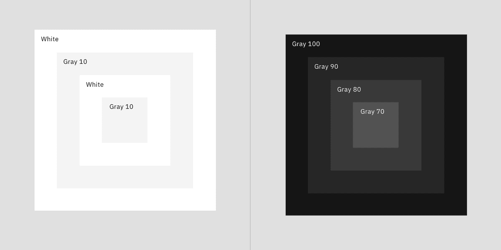
This unconventional system generally works well for most applications, as they only require a few levels of elevation. Here’s an example dashboard design in light and dark mode.
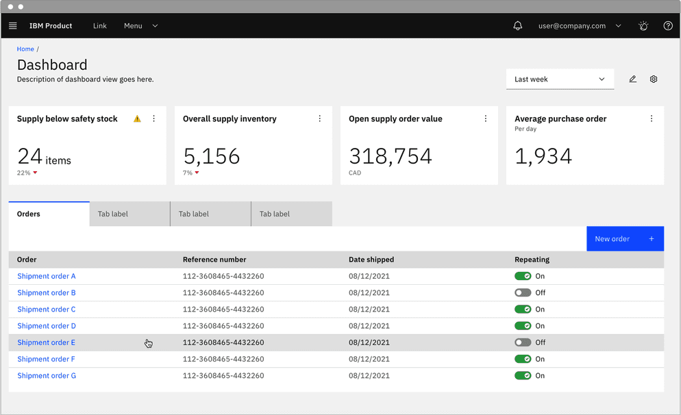
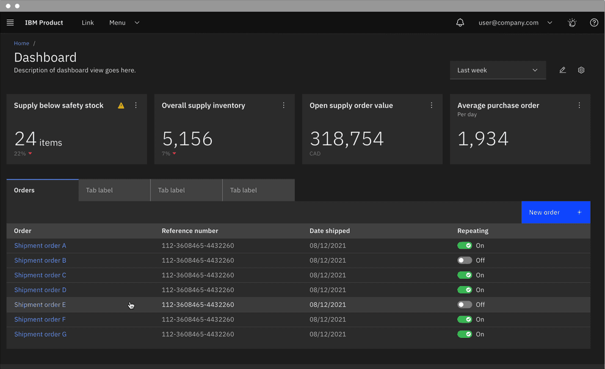
Most design systems only provide usage guidelines for each component, whereas the Carbon design system also covers larger UI patterns such as logins, forms, and filtering. For example, there are many different ways to filter data depending on the context. Carbon design system helps designers and developers decide on a suitable pattern based on their specific situation. The following filtering pattern uses a multi-select dropdown menu.
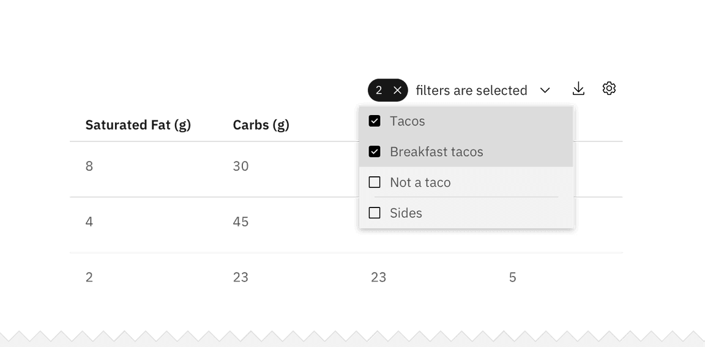
The next example is of a filtering pattern that’s always on display in the sidenav, for faster and more complex filtering of data.
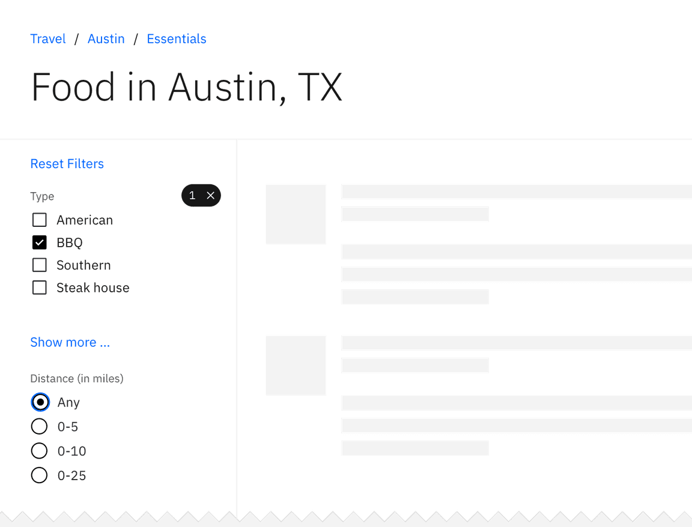
Documenting design patterns in this way makes it a lot easier for designers and developers to follow and helps to ensure consistency across applications.
The component guidance and colour system is also clever and comprehensive. There’s so much to learn from this design system, even as an experienced designer. That’s what makes it my top design system example.
View IBM’s Carbon Design System
Atlassian Design System
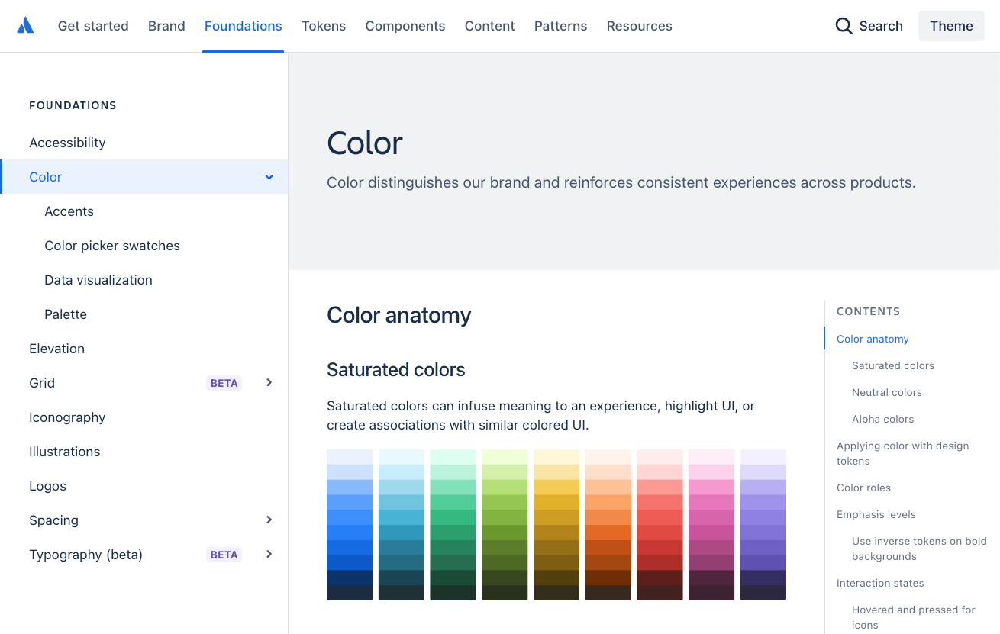
Looking through the Atlassian Design System, you can very quickly see the meticulous thought and attention to detail that has been put into it. It can initially be a bit overwhelming to digest due to its size and complexity, but when you consider that it’s supporting a whole suite of products, it’s actually relatively concise.
What I learned
Atlassian has treated elevation in a more conventional way that makes a lot of sense. I actually used a similar approach in my Practical UI Figma design system. In light mode they use shadows to indicate depth, while in dark mode they use both shadows and colour.
They have 4 design tokens to indicate elevation, which should be sufficient for most website applications. One of the elevation tokens sits lower than the default surface level for sunken interface elements.
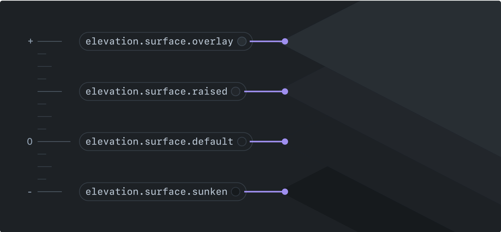
Each elevation colour token has a corresponding shadow token for consistency.
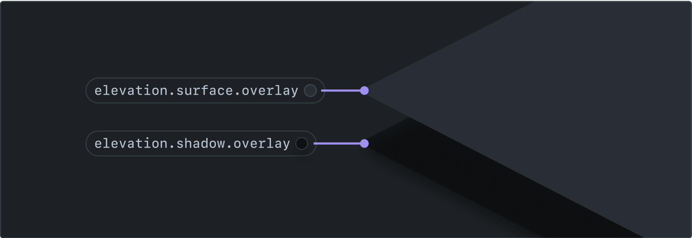
The colour system is also really well designed. I especially like that they use alpha, or transparent, colours alongside more conventional solid colours. Using transparent colours for foreground elements helps to ensure that they look consistent when sitting on different background colours. I’ve also used transparent colours in my own Figma design system and I think transparency will become more prevalent once more design teams realise the advantages.
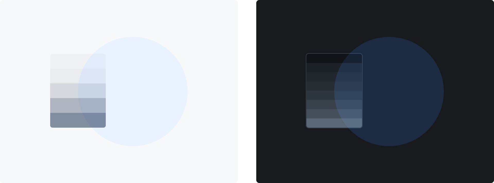
The design token naming conventions are also quite intuitive. Design tokens are the basic building blocks used to store and apply design decisions consistently across a digital product. In simple terms, they’re like little pieces of information that define things like colours, fonts, spacing, and sizes, so that these elements can be used the same way in different places, keeping the design consistent.

If you’re looking for ideas on how to best name design tokens, it’s worth checking out how Atlassian has done it. They even have a token picker tool to help you find and apply the correct colour token.
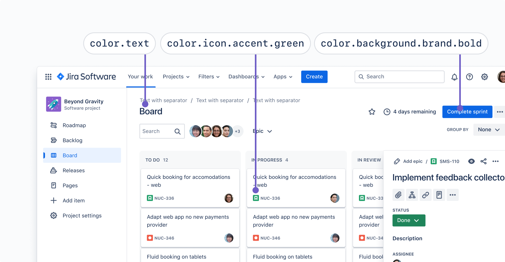
Those were just a few of my favourite parts of this beautifully designed design system. Their component and UI pattern guidance is also comprehensive and a great learning resource. Definitely one of my favourite design system examples.
View the Atlassian Design System
Adobe’s Spectrum Design System
There’s lots of interface design fundamentals to learn from Adobe’s Spectrum Design System. Its comprehensive guidance and clear examples almost make it a crash course in UI design. It covers all the basics like colour, typography, and components, but also includes often forgotten details like motion design, copywriting, and inclusive design.
What I learned
While most design systems use the same sized components across both mobile and desktop, Adobe has chosen to scale up the size of components and typography on mobile devices. This is to account for the fact that our fingers are generally less precise than mouse pointers.

Spectrum uses a 1:1.25 scale ratio. This means that a mobile component is 25% larger than its desktop counterpart. There are also 2 separate typography scales across mobile and desktop. Border widths remain consistent across devices. I’m not sure that the complexity of this scaling system is worth the benefit, but it’s definitely a novel approach.
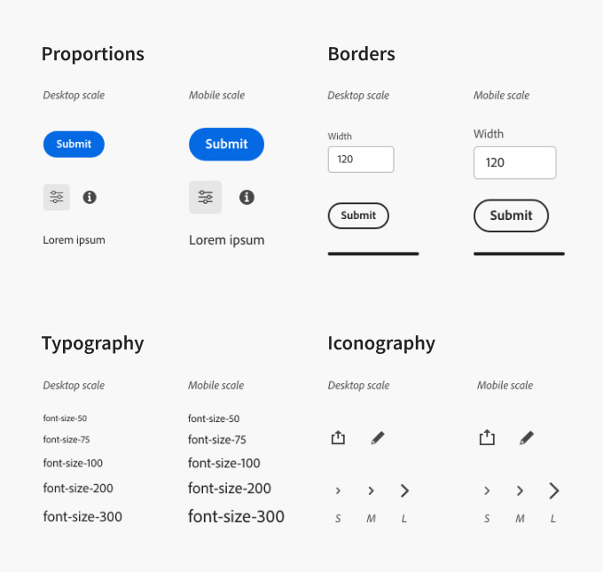
Words make up the majority of an interface and yet they’re often overlooked in design systems. It’s great to see that Spectrum has a section of their design system guidance dedicated to copyrighting. It’s quite comprehensive and includes guidance on voice and tone, grammar, and inclusivity. There’s even guidance on how to write error messages to ensure consistency across their products.

Spectrum’s colour system is also cleverly designed and often used by designers as inspiration for their own colour system. Check it out in more detail for a free design lesson on how to create a colour palette.
View Adobe’s Spectrum Design System
Other great design system examples
Once you’ve studied the top 3 design system examples, I’d suggest going through some of the following as well. I’ve provided a brief summary for each design system and highlighted what’s unique about it. Let’s get into these other design system examples.
Google’s Material Design System

Google’s Material Design is well-known for its unique “material metaphor,” which mimics physical surfaces to create a natural sense of interaction. Its open-source nature and adaptive design principles, like motion and depth, make it a go-to system for building intuitive and responsive user experiences.
The main downside to this design system is its complexity. Then again, its complexity is what makes it so flexible and adaptable to different app designs. You could easily spend a week learning about it and still only have scratched the surface. I guess that’s why some designers have a specific focus on designing Android apps, as it’s taken them considerable time to learn the ins and outs of Material Design.
The colour and theming system is especially clever and versatile, so I’d suggest checking it out if you’re looking to introduce themes to your design system.
View Google’s Material Design System
Shopify’s Polaris Design System
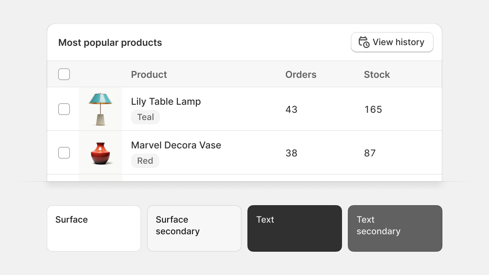
Shopify’s Polaris Design System is one of few design systems focused on e-commerce with tools that streamline product pages, checkout flows, and customer management. If you’re designing an e-commerce website, there’s definitely lots to learn from Polaris.
One of the great things about Polaris is the wealth of visual examples in their guidance material. Rather than simply telling you how to use components or apply colours, it shows you with detailed examples. This makes it much faster and easier to learn.
Polaris’s visual design aesthetics are also top notch, making it a great place to learn not just how to build a functional website but also a beautiful one.
View Shopify’s Polaris Design System
Github’s Primer Design System

Primer is Github’s developer-first design system that excels in providing a strong foundation for consistency and functionality across code-centric platforms. Its unique focus on open-source collaboration and its extensive CSS framework make it highly customizable and developer-friendly.
Design systems often cater their guidance documentation towards designers, but it’s important to remember that developers also require guidance on how to use the system. It’s great to see that Github provides comprehensive developer documentation. If you’re looking for ideas to beef up your usage guidelines for developers using your design system, Primer is definitely worth a look.
View Github’s Primer Design System
Apple’s Human Interface Guidelines
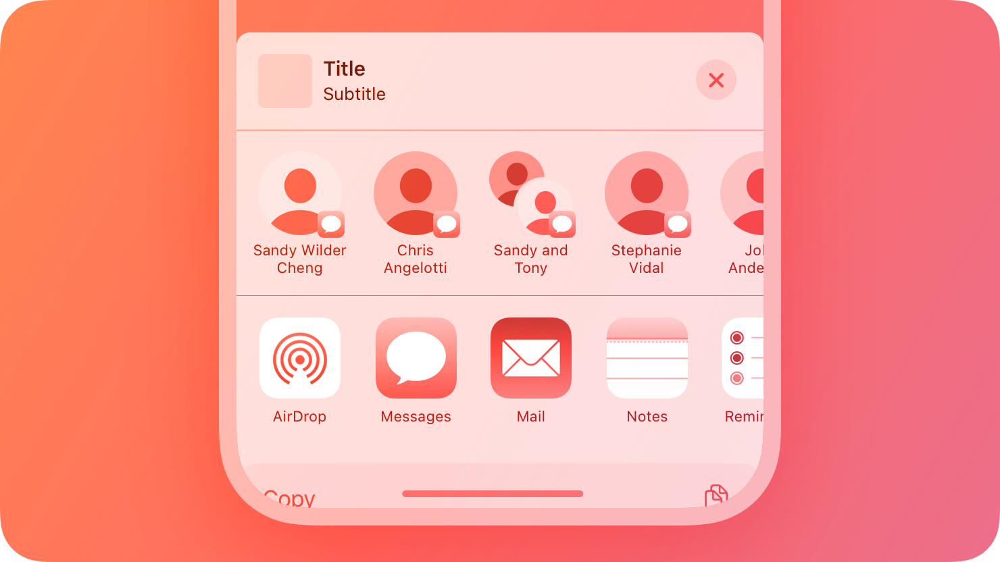
This is probably the most famous of our design system examples, although I wouldn’t say it’s one of the best. Apple’s Human Interface Guidelines (HIG) emphasize intuitive user experiences, refined through years of crafting world-class products. What makes HIG unique is its integration with Apple’s hardware and software ecosystems, allowing for deeply immersive and seamless experiences on devices like the iPhone, iPad, and Mac.
Surprisingly, Apple’s Human Interface Guidelines aren’t very easy to consume, as they’re very text heavy with limited visual examples. They’re also not very detailed, which can leave you wondering if you’re using the design system correctly or not. This is probably one of the reasons why some designers focus specifically on designing for iOS, as there’s quite a high learning curve.
View Apple’s Human Interface Guidelines
Gov.uk Design System
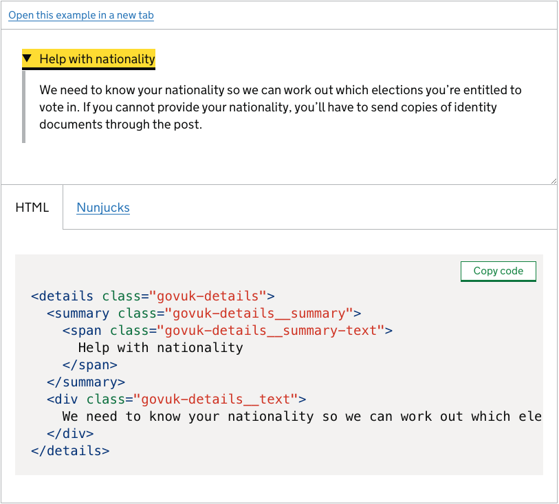
While it’s not the most beautiful design language, the Gov.uk Design System stands out for its strict emphasis on accessibility and inclusion, designed specifically for public services. With a commitment to ensuring that everyone can access government information and services, it offers high standards for usability, focusing on clarity, simplicity, and accessibility for all citizens.
One of the main strengths of this design system is the fact that most of its components and design patterns have been validated by user testing and research. They’ve also been tested to ensure they’re accessible. So if you’re doing component research, the Gov.uk design system is a handy resource.
Because it’s focused on usability and accessibility, you’ll also find that the system is relatively simple and easy to follow. If a design system servicing so many people can be this simple, it makes you wonder why other design systems are so complex. Sure, it may lack the flexibility of some design systems, but simplicity is generally a good thing for both the people using the website and the product teams building it.
Microsoft’s Fluent 2 Design System
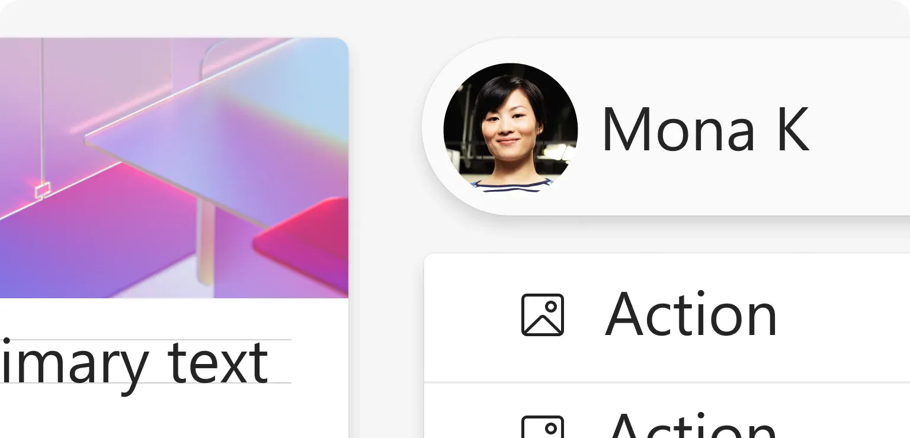
Microsoft has come a long way with their design language and are now pushing the boundaries with their modern and colourful aesthetic. Their comprehensive design system covers web, iOS, Android, and Windows platforms. Guidance for each platform is separated to keep things organised, while the foundational design guidelines are consistent across platforms.
While their guidance isn’t super detailed, it’s enough to get by and makes it quick and easy to learn. Microsoft’s Fluent 2 Design System doesn’t excel in any particular area, but it’s a solid design system as a whole. This makes it a great example of all the main elements a good design system needs.
View Microsoft’s Fluent 2 Design System
Gitlab Pajamas Design System
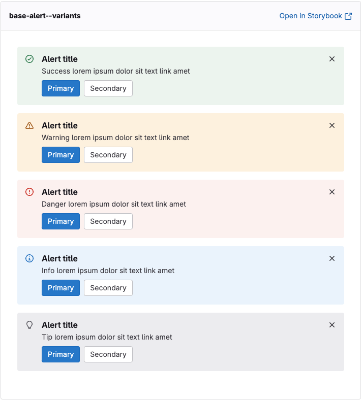
One of the things missing from most design systems is community collaboration. GitLab prides itself in being an open source product with thousands of community contributors. There’s also an issue tracker to allow contributors to submit change requests and monitor their progress. This means the system can grow faster and helps to ensure that it’s focused on user needs.
GitLab’s Pajamas Design System contains all the usual stuff including colour, typography, and component guidelines. It’s well organised and very comprehensive. The component guidelines are especially noteworthy and explain the structure of components along with providing code examples in both Vue.js and Rails.
View Gitlab Pajamas Design System
Twilio’s Paste Design System

Twilio’s Paste Design System is tailored specifically for building messaging experiences, ensuring consistency and accessibility across Twilio’s products. What makes it unique is its deep focus on designing interfaces for communication and its commitment to WCAG 2.1 AA accessibility standards.
If you’re building a messaging application, you’ll find a treasure trove of helpful components and UI patterns in this design system.
View Twilio’s Paste Design System
Salesforce’s Lightning Design System

Salesforce’s Lightning Design System enables product teams to create intuitive, enterprise-grade applications on the Salesforce platform. Its unique focus is on creating components that integrate directly with Salesforce’s powerful CRM capabilities, making it an ideal choice for building scalable business applications.
I like that Salesforce have created a whole section of guidance on motion design, which they refer to as “kinetics”. Motion design can make a big difference in product design and it’s often put in the “too hard” basket for later. Having clear guidance on motion design principles and patterns helps to ensure that it’s implemented frequently and consistently.
View Salesforce’s Lightning Design System
Vercel’s Geist Design System
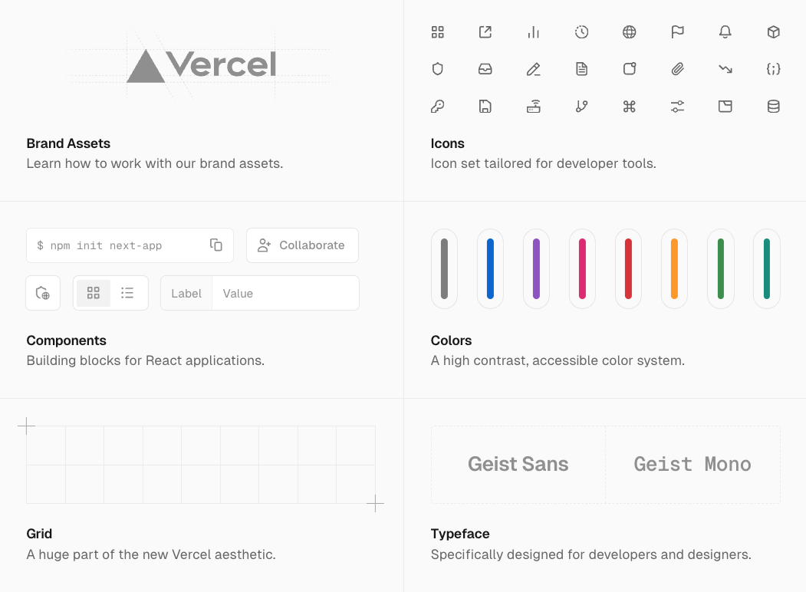
Vercel’s Geist Design System is known for its minimalist aesthetic and performance-driven design, catering to web developers who prioritize speed and simplicity. It’s particularly unique for its focus on creating ultra-lightweight, responsive designs that align with Vercel’s mission of building the modern web.
It’s clear from the onset that this design system is focused on aesthetics. Components are beautifully crafted and styles are kept clean and minimal. There aren’t many usage guidelines, which opens up the door to inconsistency. Perhaps they wanted to keep things flexible to encourage innovation? They also didn’t seem to take accessibility into account, as many interface elements have insufficient contrast.
View Vercel’s Geist Design System
BBC’s GEL Design System
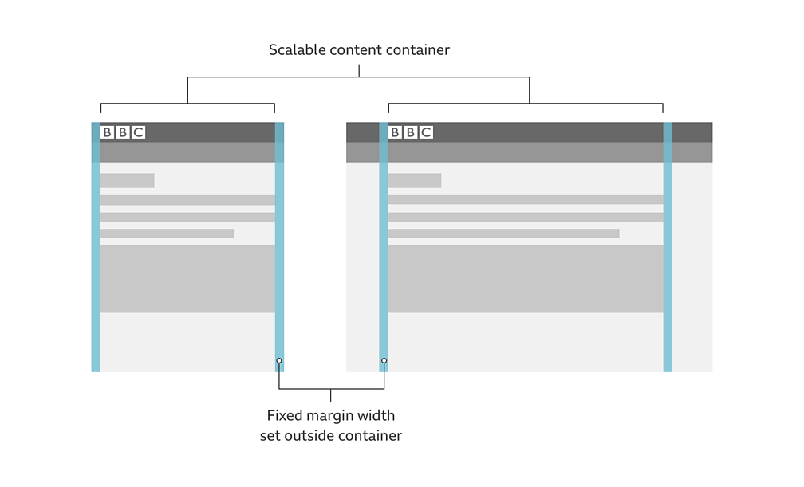
BBC’s GEL (Global Experience Language) Design System ensures a cohesive, accessible experience across the BBC’s vast digital offerings, from news to entertainment. What sets it apart is its focus on ensuring high levels of accessibility and editorial consistency for a global audience, maintaining the integrity of the BBC brand.
This design system is no spring chicken. It was one of the first large scale design systems I remember seeing early on in my career. The way the design guidelines have been structured and presented has clearly influenced many other more recent design systems. You can learn some solid fundamental design principles from this design system example.
Mozilla’s Protocol Design System
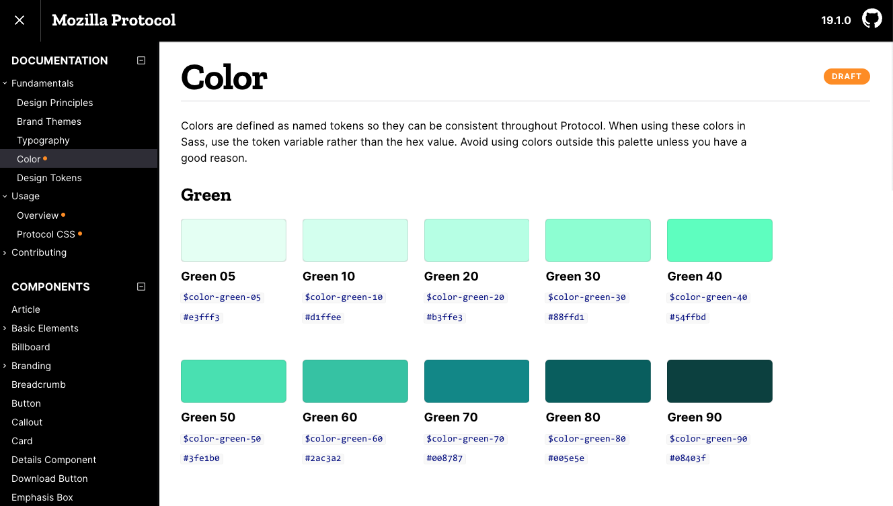
Mozilla’s Protocol Design System is an open-source framework optimized for the web, supporting Mozilla’s mission of keeping the internet open and accessible. Its focus on privacy-first design and support for Mozilla’s products like Firefox and MDN Web Docs makes it uniquely aligned with open-source web principles.
Their usage guidelines are very concise and components are limited, so it’s a quick design system to learn. It goes to show that a lean design system can go a long way.
View Mozilla’s Protocol Design System
I hope you’ve found these design system examples helpful and inspiring. Each of them is basically a free UI design course that also teaches you how to scale designs across multiple products and platforms. I definitely found them helpful when building my Practical UI design system. If you’re looking to build your own design system and aren’t sure where to start, I’ve also put together a step by step guide on how to build a design system. Best of luck.
PS If you found this article helpful, share it with others and follow me on Twitter and LinkedIn for daily design tips, tools, resources, and inspiration.